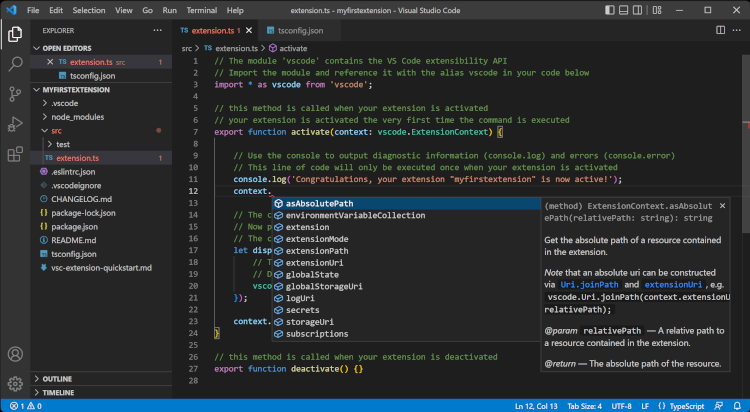

Nós temos como objetivo facilitar o aprendizado de programação em geral. Para isso, decidimos formar um site para direcionar o estudo de Engenharia de Software no formato de um passo-a-passo ensinando os básicos do estudo de programação.
O primeiro passo para começar a programar é ter um aplicativo no qual programar no primeiro lugar. Sem um console de programação, como costuma ser chamado, não é possível aplicar dita programação para fazer um site.
Um conduite recomendavel é o VSC, um aplicativo de programação compatível com várias linguagens, como HTML, CSS e Python.
Para conseguir programar algo em qualquer linguagem, é necessário conhecer suas palavras-chave e compreender suas aplicações. As palavras-chave, ou "Meta Tags" são a base da programação, com cada uma aplicando um comando para o console, que comete uma ação em resposta.
Uma forma efetiva de evitar se esquecer de Tags é o uso frequênte. Com pesquisa e uso frequentes de tags importantes em programação, a mente do programador costuma formar uma conexão entre o uso frequente de certas Tags com um senso de relevância, formando memória muscular e permitindo ao engenheiro de software aprender a linguagem com o tempo.
Programar códigos pequenos em uma linguagem de preferência de vez em quando pode ajudar a aprender tal linguagem mais facilmente. Programar textos, imagens ou vídeos em HTML pode ajudar o programador a não esquecer de pequenos códigos a serem usados no dia-a-dia de um programador. fazer programas que simulam sistemas de irrigação ou medidores de temperatura em Python tem o mesmo efeito.
A recomendação entregue para você é de manter consistência em linguagem, mas variar em fragmentos de códigos as vezes. Escolha uma linguagem específica para estudar e faça programas ou sites pequenos como um hobby todos os fins de semana. Programadores de jogos "Indie" gostam de criar campeonatos de jogos com um tema central para praticar, como "mudança de status", onde o foco é, não no protagonista, mas em um fator separado, como um tiro ou uma camera.
Pesquisar por ajuda em Plataformas como o Reddit pode facilitar o aprendizado em linguagens de programação em um nível exponencial. Muitas pessoas porcuram ajuda no subreddit r/programming, uma comunidade aberta de programação onde pessoas podem fazer perguntas sobre engenharia de Software no geral e conseguir respostar rápidas de outros membros da comunidade.
Também é possível encontrar ajuda no Youtube por meio de sites educacionais. Um canal ótimo para aprender programação é chamado Programação Web, Um canal que tem como propósito ensinar programação em várias linguagens de forma facil e prática.
Caso com toda a ajuda disponibilizada nesse passo a passo, você ainda queira aprofundar seus conhecimentos de programação, o seu próximo passo será em direção a faculdade de engenharia de Software. Após aprender um nível intermediário e bons métodos de programação geral, você deve estar um pé à frente de seus colegas de faculdade. Boa sorte!
proxima pagina